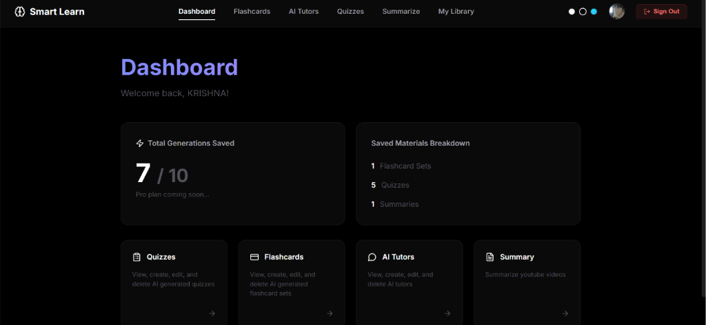

Smart Learn
Smart Learn is an AI-powered study companion designed to make studying interactive and efficient. Users can upload lecture slide PDFs, recorded lecture video/audio, or paste article links. The system parses and indexes this content using Vector RAG pipelines, allowing you to converse with your notes naturally.

What it is
The portal functions as an intelligent document explorer. Instead of skimming through hundreds of pages of text or listening to hours of lectures, users can upload their study materials and instantly generate context-aware summary notes, chatbots that answer syllabus questions, and custom interactive practice exams.

How it is built
Built on top of Next.js App Router for fast server-side rendering and API endpoints. It integrates the Google Gemini API to handle contextual search, chatbot question-answering, and automated quiz/flashcard generation. Database modeling and relations are managed with Prisma ORM connecting to a Supabase database.
// Vector search prompt schema
const getContext = async (queryEmbeddings, documentId) => {
const matches = await db.$queryRaw`
SELECT id, content, 1 - (embedding <=> ${queryEmbeddings}) AS similarity
FROM "DocumentChunk"
WHERE "documentId" = ${documentId}
ORDER BY similarity DESC
LIMIT 4;
`;
return matches;
};Core Features
- Multi-format ingestion: PDFs, MP4/MP3 recordings, YouTube links, and web URLs.
- Contextual RAG Chatbot powered by Google Gemini API.
- Automated Study Flashcard Deck & Quiz Generator.
- Supabase PostgreSQL relational storage with Prisma ORM integration.